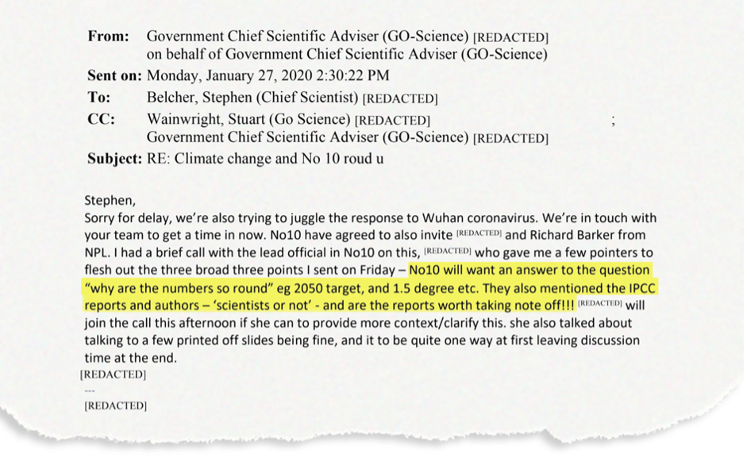
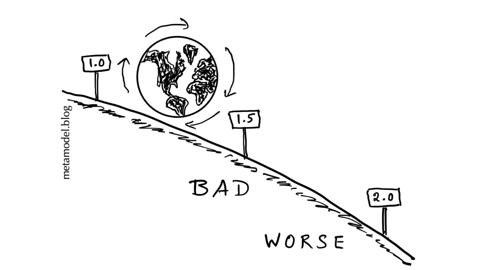
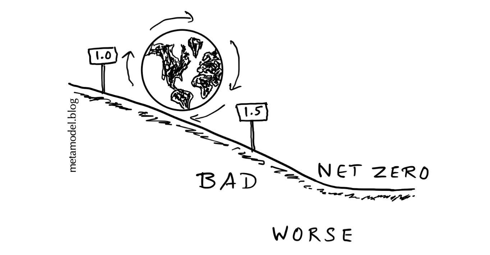

Why are the (climate) numbers so round?
ePUB • PDF • 10 m • 1971 w • comments
Note to non-UK readers: No. 10, Downing Street is the official residence of the UK Prime Minister (like 1600 Pennsylvania Avenue for the US President). No. 11, Downing Street is the official residence of the Chancellor of the Exchequer, often considered the second-most powerful position (rather like the Vice President in the US, but with specific responsibilities similar to the Treasury Secretary).
 Figure 1. From The 11 slides that finally convinced Boris Johnson about global warming CarbonBrief.org
From: Metamodel.blog
To: No. 10, Downing Street, London
Date: Tuesday, May 24, 2022
Subject: Why are the numbers so round?
Dear No. 10,
I read with interest the article about the scientific briefing on climate that changed your mind about global warming.1 The briefing underscores the importance of making science accessible to decision makers. One email leading up to that pivotal briefing includes an interesting nugget of a question (Figure 1). You asked, “why are the numbers so round”, referring to the 2050 target year, 1.5 degree warming, etc.? That is indeed an excellent question, appropriately coming from someone who lives in a house numbered 10.
Like a politician who wants to move into 10 Downing Street but ends up at 11 instead, shooting past round numerical targets has been the subject of much discussion after the recently released IPCC climate report. Are we likely to overshoot the global warming target of 1.5°C or the net-zero target date of 2050? If the warming ends up being 1.6 or 1.7°C or net-zero is reached 5-10 years later, would climate cross a tipping point?2 As there appears to be another UK climate change briefing in the offing,3 this letter attempts to explain the “roundness” of climate numbers.
The sentence in that email snippet above that follows your “roundness” question suggests you are not sure if actual scientists wrote the IPCC reports. Rest assured that scientists were involved in writing the IPCC reports and coming up with the climate numbers. The roundness of the numbers is itself perhaps proof of that. In business, it is considered good practice to add false precision as a negotiating tactic: “if one party gives a round number, it gives the signal that the party doesn’t really know what it’s doing.”4 For example, faux precision is one explanation why Elon Musk offered to buy Twitter at $54.20 a share, instead of $54 or $55 a share.5 But scientists aren’t businessmen. When scientific thresholds are approximate, it is normal to round the numbers up or down, to avoid giving a sense of false precision and to make them memorable.
Scientists have determined that the trapping of heat by increasing concentration of carbon dioxide and other atmospheric gases (known as greenhouse gases) is responsible for the global warming that is happening.6 Burning of fossil fuels used in transportation, power generation, and other human activities is increasing the concentration of these gases. As the globe warms, the climate changes from what we are used to, leading to harmful impacts like more heatwaves, intense rainfall events, and rising sea levels. We need to reduce the emission of the greenhouse gases to zero as soon as possible to stop further warming. The current goal is to eliminate carbon emissions by 2050, and to keep the warming below 1.5°C.
You are right to wonder if 1.5 degrees sounds too round to be a scientific constant. Fundamental science constants typically have more digits in them. For example, the current hot controversy in fundamental physics is over whether the mass of the W boson is 80,357 MeV/c2 or 80,433 MeV/c2.7 Whatever the correct value of that physics number, it will not affect government policy. Round climate numbers like 1.5 or 2.0, on the other hand, are quite important for policy even if they lack the exactitude of fundamental physical constants. They are inexact because climate is a highly complex system with many interacting physical, chemical, biological, and human components.
An example of a useful round number is the recommended social distancing threshold for Covid avoidance.8 The World Health Organization recommends 1 meter distancing, and several countries follow that stringent recommendation. But some other countries recommend 1.5 meter distancing, the US recommends 1.8 meters (6 feet) and the UK recommends 2 meters.
Which is the correct number for social distancing? The answer would be “the largest practical one.” The greater the social distancing, the lesser the health risk. Different numbers reflect the different risk tolerances, and different length units in the different countries.9 Some people take the Covid distancing thresholds literally, believing that their risk of catching Covid increases dramatically if they cross this threshold even slightly. But many other factors, such as the ventilation and mask efficacy, can have a larger impact on the risk of catching Covid than social distancing.
Although social distancing illustrates the unit-dependence of thresholds, it is not the best analogy for climate thresholds. Because of the nonlinearity of climate impacts, the difference in harm between 1.5 and 2 degrees of global warming is far greater than that between 1.5 and 2 meters of social distancing. Every half degree of warming matters,10 and many more regions will face serious harm as local warming thresholds are crossed.11
A better analogy for a climate threshold is your doctor telling you to keep your bad cholesterol level below 4.0 mmol/L (about 160 mg/dL in the US),12 rather than keep it below a threshold with more digits of precision, say, 4.123. There is no health “tipping point” that is triggered if you “overshoot”. You are unlikely to suffer a heart attack immediately if your bad cholesterol rises slightly above 4.0, but your risk will increase. If the average cholesterol level of the whole population increases, the number of cardiac disease-related deaths will increase rapidly.

The globe has already warmed 1.2°C above pre-industrial levels.13 Our predictions are that the Earth’s climate is currently barreling down the slope of ever worsening climate impacts rather than headed towards a cliff at 1.5°C (or 2.0°C).14 The secret to success in climate mitigation, as it is in life, is to set challenging but achievable goals. A few years ago, 1.5°C appeared to be far enough in the future to serve as an achievable target for stabilizing global temperature, if aggressive steps to mitigate emissions were started immediately. It appears less achievable now, although exceeding the target in a single year is less worrying than the exceeding it in long term.15
The roundness of the warming targets depends upon the temperature scale. Those who live outside the United States surely know that water boils at 100°C, a rather round number. That’s because the Celsius scale is defined that way. Water freezes at an even rounder 0°C. Again, that is because of the definition of the Celsius scale. These two scientific numbers completely define the temperature scale. This means that no other scientific temperature numbers can be truly round — except by coincidence or because of rounding.
On the Fahrenheit scale, the two commonly discussed warming thresholds, 1.5°C and 2°C, would correspond to 2.7 and 3.6°F respectively. In an alternate universe where everyone used the Fahrenheit scale, we might have chosen rounded warming targets of 3.0°F (1.67oC) or 3.5°F (and this letter might be addressed to 1600 Pennsylvania Avenue instead).
We should work hard – starting now – to keep global warming below our chosen target, be it 1.5°C or 2.0°C, or something in-between. But if we overshoot by a small fraction of a degree, the world will not end. Global warming thresholds should be taken seriously, but not literally.
An even rounder target: net-zero
What about another very round number, net-zero, or reducing carbon dioxide emissions to zero? Why is the zero-emission target more appropriate than a target of, say, 3 Gigatons per year or -3 Gigatons per year? (For reference, current fossil-sourced carbon dioxide emissions are about 36 Gigatons per year.) The roundness of net-zero turns out to be coincidental.
Early climate mitigation research focused on keeping carbon dioxide concentrations constant, but that would have led to continued warming over centuries, until the ocean absorbed enough heat to reach equilibrium. This was referred to as “committed warming.” Subsequent research showed that if we reduce carbon emissions to zero, the land and ocean will continue to absorb carbon dioxide and steadily lower its concentration.16 Coincidentally, the cooling effect of this CO2 absorption roughly cancels the effect of continued ocean warming. This means that we can expect global temperatures to stabilize shortly after emissions go to zero. (Ideally, all carbon dioxide emissions should cease, but in practice some unavoidable positive emissions may need to be offset by yet-to-be-perfected negative emissions technology.)
To explain it better: If the Earth is like the human body, carbon emissions keep putting additional blankets on the body.17 Land and ocean are continually removing about half of these extra blankets. The remaining extra blankets add to the warming of the body. If carbon emissions stop and the number of blankets stays constant, the warming will continue for several more minutes until the human body reaches a warmer equilibrium. In the case of climate, it would take several more centuries to reach the warmer equilibrium. But land and ocean will continue to remove the carbon dioxide blankets even after emissions stop, reducing the number of blankets. This permits temperature to reach equilibrium sooner — within a few seconds in the case of the human body and within a few decades for the climate system.

If it were not for the coincidental cancellation between atmospheric carbon dioxide reduction and ocean heat uptake, we would have a less round (and non-zero) emissions target to stabilize global temperature. Alternatively, we may have had to choose a non-zero rate of warming as a practical mitigation target. Note that because of the uncertainty in climate and carbon cycle models, we cannot be absolutely sure that net-zero emissions will stabilize temperatures exactly:18 Global temperatures may still trend upward slightly when we reach net-zero, or possibly trend down a bit, if the uncertainty works in our favor.
The year 2050 is the notional target for reaching net-zero. It was chosen for practical (and political) reasons based on assessments of how quickly emission reductions could be achieved. If we can reach net-zero by 2040 or 2045, all the better. What if we only reach net-zero by 2055 or 2060? We’ll then have to bear the increasingly harmful impacts of the continued warming, but we aren’t likely to cross a global climate tipping point.
Sincerely,
metamodel.blog
-
Revealed: The 11 slides that finally convinced Boris Johnson about global warming (Carbon Brief) ↩︎
-
Can we predict global climate tipping points? (Metamodel.blog) ↩︎
-
MPs to get scientific briefing on climate after activist’s hunger strike (The Guardian) ↩︎
-
When Negotiating a Price, Never Bid with a Round Number (Harvard Business School) ↩︎
-
Why Intelligent Minds Like Elon Musk Embrace the Science-Backed No Round Numbers Rule of Negotiating (Inc.com) ↩︎
-
Sixth Assessment Report (IPCC) ↩︎
-
CDF collaboration at Fermilab announces most precise ever measurement of W boson mass to be in tension with the Standard Model (Fermilab) ↩︎
-
1m, 1.5m, 2m — the different levels of social distancing countries are following amid Covid (ThePrint.in) ↩︎
-
Two meters? One meter plus? Social distancing rules prompt fierce debate in U.K. (Washington Post) ↩︎
-
Why protesters should be wary of ‘12 years to climate breakdown’ rhetoric (oxfordmartin.ox.ac.uk) ↩︎
-
Cholesterol test (Mayo Clinic) ↩︎
-
How close are we to reaching a global warming of 1.5°C? (ECMWF/Copernicus) ↩︎
-
Thinking about Climate on a Dark, Dismal Morning (Scientific American) ↩︎
-
Climate limit of 1.5C close to being broken, scientists warn (The Guardian) ↩︎
-
Stabilizing climate requires near-zero emissions (Geophysical Research Letters) ↩︎
-
The actual greenhouse effect is more complicated than this, due to the shortwave feedback. See The Greenhouse Effect (And Then There’s Physics) ↩︎
-
Is there warming in the pipeline? A multi-model analysis of the Zero Emissions Commitment from CO2 (Biogeosciences) ↩︎